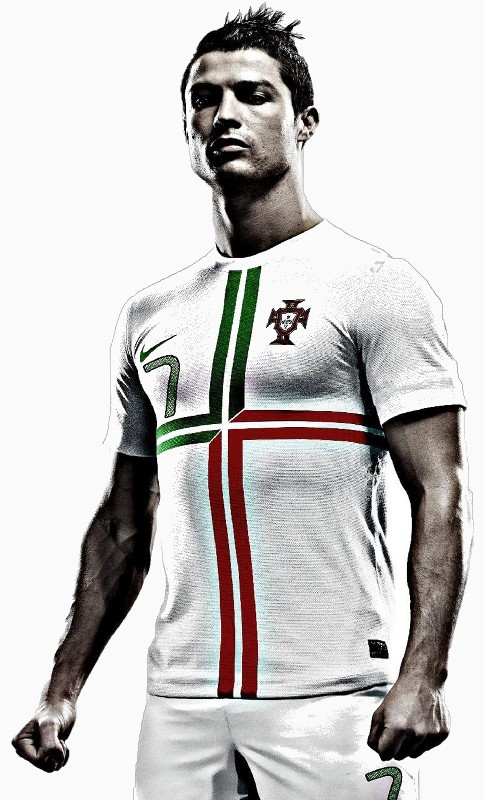

Your browser doesn't support impress.js. Try Chrome or Safari.

The Rise Of
Cristiano Ronaldo
[Use the Spacebar or Arrow Keys to navigate]
Born on Febrauary 5th, 1985, in the island of Madeira, Ronaldo was the youngest child of his family and had an elder brother and two elder sisters.
His father was a municipal gardener and his mother was a cook. Ronaldo spent his early childhood in poverty, sharing a room with his three siblings.
He had been playing football right from an early age. When he was eight, Ronaldo used to play for an amateur team named Andorinha.
When he was about 10, he played for a local club, Nacional and after a title-winning campaing, signed with a club named Sporting CP.
Ronaldo was expelled from school for throwing a chair at one of his teachers when he disrespected Ronaldo.
*I'm very glad he did that.
At 14 years of age, he told his mom that he was going to focus entirely on football. And she agreed.
In his league debut on 7 October 2002 when he played for Sporting against Moreirense, Sporting won 3-0 of which 2 goals were Ronaldo's.
When all was going well and he was 15, the doctors diagnosed him with a racing heart condition and he might have had to give up football.
Fortunately, he had a laser surgery performed on his heart and was back in training after only a few days.
In November 2002, Arsenal's manager Arsene Wenger invited Ronaldo to their training ground and wanted to sign him into their club in the subsequent months.
However, fate had something else in store for Ronaldo. In the Sporting vs Manchester United match in 2003 which Sporting won 3-1, Manchester's team was so impressed by Ronaldo's performance that they figured he would make an excellent addition their team
As a result, they signed him in for €15 million and Ronaldo became Manchester United's first-ever Portugese player.
There, he was given the number 7 shirt although he asked for a number 28 shirt as he did not want the pressure of living up to the expectation linked to the number 7 shirt which was previously worn by players like George Best, David Beckham, etc.
Ronaldo had a very successful time in Manchester United, scoring 118 goals in total in his United career and also won major awards like:
- FWA Footballer of the Year (2006-2007, 2007-2008)
- PFA Young Player of the Year (2006-2007)
- PFA Players' Player of the Year (2006-2007, 2007-2008)
- PFA Fan's Player of the Year (2006-2007, 2007-2008)
- Portugese Footballer of the Year (2006-2007)
- Sir Matt Busby Player of the Year (2003-2004, 2006-2007, 2007-2008)
- Manchester United Players' Player of the Year (2006-2007)
Holy shit that's a lot of awards!
In 2007, rumours spread that Real Madrid was willing to pay €80 million for Ronaldo. However, he signed a £120,000-a-week five-year extension with United. This made him the highest paid United player in the team's history.
On June 11 2009, Manchester United accepted £80 million from Real Madrid when Ronaldo expressed a desire to leave the club and he was transferred on July 1st. With that, Ronaldo became the most expensive footballer in history.
Since then, Ronaldo's been playing exceptionally well in Real Madrid too, scoring an outstanding 252 goals and bagging even more awards.
He also represented Portugal at the World Cup in 2006 and 2010 and the Euros 2004, 2008 and 2012.
These are some of Ronaldo' records:
- Most goals scored in a single calendar year for club and country: 63 goals in the year 2012
- World's most expensive footballer in history: 80 million pounds
- The only player in Europe to have won the European Golden Shoe in two different leagues: English Premier League and Spanish La Liga
- First European league player to reach 40 goals in a single season in two consecutive years.
- Highest strike rate in England in winning the Premier League Golden Boot: 31 goals in 34 games.
Nobody becomes footballer of this level without hours and hours and even more hours of training. Ronaldo is obsessed with his impressive daily training routine:
- 3 to 4 hours of practice that assure a very low body fat level (<10%)
- Several periods of running for cardio (25-30 mins)
- High intensity and explosive sprinting drills
- Technical drills to enhance skills and ball control
- Football tactical exercises to improve understanding with teammates
- Lifting weights at the gym to develop specific muscles but also his total body strength
Not only is he a great footballer, he often gives back to society. In 2009, Ronaldo donated £100,000 to the hospital in Madeira that saved his mother's life from cancer. In 2012, Ronaldo and his agent paid for specialist treatment for a nine-year-old Canarian boy with apparently terminal cancer. In November 2012, Ronaldo sold the golden boot he had won in 2011 for €1.5 million and gave the money to fund schools for children in Gaza.
In 2010 his net wealth was estomated at $160 million. In May 2014, Forbes ranked Ronaldo first in their list of the world's highest paid players, with earnings of $73 million in combined income from salaries, bonuses and off-field earnings for the previous 12 months.
"I am not a perfectionist, but I like to feel that things are done well. More important than that, I feel an endless need to learn, to improve, to evolve, not only to please the coach and the fans, but also to feel satisfied with myself. It is my conviction that there are no limits to learning, and that it can never stop, no matter what our age." - CR7